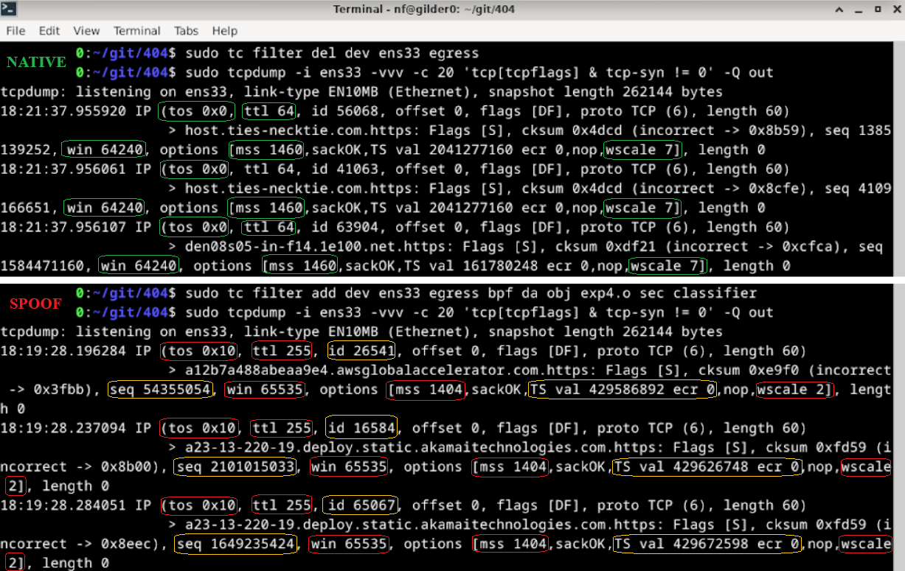

eBPF
Current role
The eBPF layer is real and currently wired into the Linux runtime path.
It is part of the open source CLI application and runtime toolchain, not a separate hosted service.
What it does today
The current module attaches to Linux Traffic Control (tc) egress hooks and rewrites packet-level values that can be used for passive OS and stack fingerprinting.
Current implemented behavior:
**IPv4:**
- TTL (Time To Live) -> forced to 255
- TOS (Type of Service) -> set to 0x10
- IP ID (Identification) -> randomized per packet
- TCP window size -> 65535
- TCP initial sequence number -> randomized
- TCP window scale -> 5
- TCP MSS (Maximum Segment Size) -> 1460
- TCP timestamps -> randomized
**IPv6:**
- Hop limit -> forced to 255
- Flow label -> randomized

Where it fits
The eBPF layer is not a replacement for STATIC. It complements STATIC.
- STATIC handles TLS, HTTP, injected runtime shaping, and control-plane behavior.
- The eBPF layer handles lower-level packet mutation on Linux.
On Windows, the managed desktop product path reaches this Linux layer through the WSL2 runtime.
On CLI-managed Linux paths, you can build and attach it directly yourself.
This layer matters because mismatches between network fingerprints and higher-level browser identity can still expose the host as synthetic or misaligned traffic.
Kernel and toolchain requirements
You need a Linux environment with:
- Linux kernel
4.15+(5.4+recommended) clangllvmllvm-striptciproute2libbpf-devlinux-headers-$(uname -r)/usr/include/bpf/bpf_helpers.h/usr/include/linux/bpf.h
Configuration model
The packet policy is still not fully profile-driven in the way the higher-level runtime is.
Today, the important mutation values are still assigned through globals in src/ebpf/ttl_editor.c rather than being fully driven by the selected runtime profile.
Typical values currently enforced by the implementation are:
- IPv4 TTL
255 - TOS
0x10 - randomized IP ID
- TCP window size
65535 - TCP window scale
5 - TCP MSS
1460 - randomized TCP sequence numbers and timestamps
- IPv6 hop limit
255 - randomized IPv6 flow label
If you are modifying the object manually before a local build, the relevant constants live near the top of src/ebpf/ttl_editor.c.
#define FORCE_TTL 255
#define SPOOF_TCP_WINDOW_SIZE 65535
#define SPOOF_TCP_MSS 1460
#define SPOOF_TCP_WINDOW_SCALE 5
Build path
The Makefile in src/ebpf builds:
ttl_editor.o
Typical local invocation:
You can also build it from inside the directory directly:
This is the same object that is packaged into the WSL distro build path.
Attach path
Typical attach sequence:
sudo tc qdisc add dev <interface> clsact
sudo tc filter add dev <interface> egress bpf da obj ttl_editor.o sec classifier
Removal:
Verify and inspect
Verify attachment:
Inspect outgoing traffic:
tcpdump -i <interface> -vvv -Q out
tcpdump -i <interface> -vvv -c 20 -Q out 'tcp[tcpflags] & tcp-syn != 0'
tcpdump -i <interface> -vvv -nn -Q out | grep -E 'ttl|win|mss|wscale'
tcpdump -i <interface> -vvv -XX -Q out
tcpdump -i <interface> -vvv -Q out port 443
VM forwarding pattern
If you want to expose a host machine through a Linux VM that is running the packet layer, use a bridged adapter for internet access and a host-only adapter between the host and guest.
On the Linux guest, enable IPv4 and IPv6 forwarding and apply the normal forwarding and NAT rules for the host-only and bridged interfaces.
sudo sysctl -w net.ipv4.ip_forward=1
echo "net.ipv4.ip_forward=1" | sudo tee -a /etc/sysctl.conf
sudo sysctl -w net.ipv6.conf.all.forwarding=1
echo "net.ipv6.conf.all.forwarding=1" | sudo tee -a /etc/sysctl.conf
sudo iptables -A FORWARD -i <host-only-interface> -j ACCEPT
sudo iptables -A FORWARD -o <host-only-interface> -j ACCEPT
sudo ip6tables -A FORWARD -i <host-only-interface> -j ACCEPT
sudo ip6tables -A FORWARD -o <host-only-interface> -j ACCEPT
sudo iptables -t nat -A POSTROUTING -o <bridged-interface> -j MASQUERADE
sudo ip6tables -t nat -A POSTROUTING -o <bridged-interface> -j MASQUERADE
On the host, point the default route at the guest's host-only adapter IP.
Important limitation
The packet policy is still not fully profile-driven in the way the higher-level runtime is.
The broader product direction is to keep userspace identity and kernel-level mutation moving toward the same selected profile state, but you should not read the current implementation as fully live-reconfigurable parity yet.